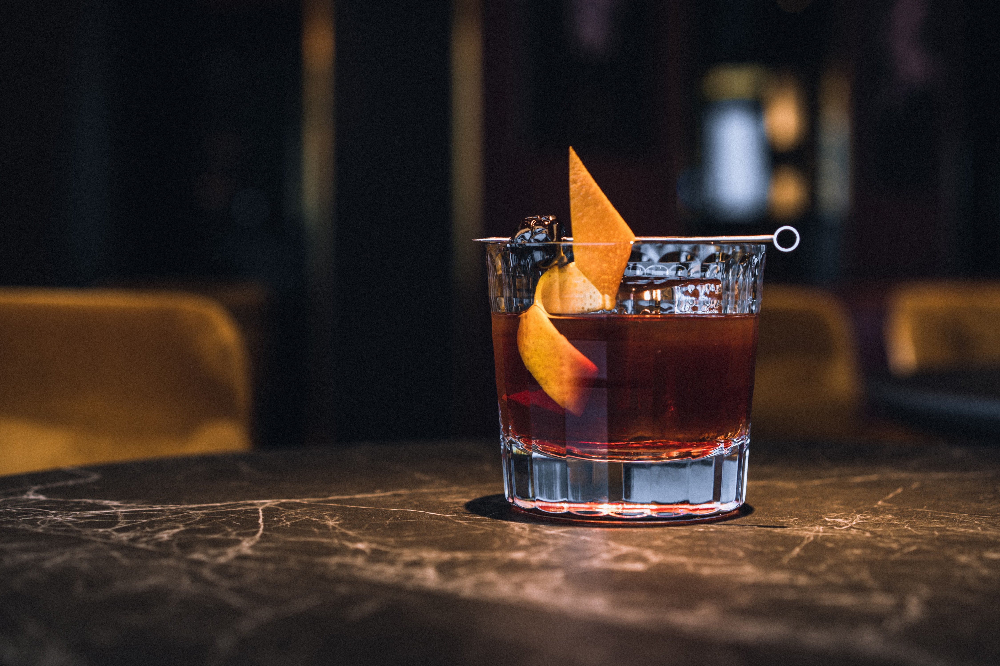

The old fashioned is a cocktail made by muddling sugar with bitters and water, adding whiskey (typically rye or bourbon), and garnishing with an orange slice or zest and a cocktail cherry. It is traditionally served with ice in an old fashioned glass (also known as a rocks glass), which predated the cocktail.
Developed during the 19th century and given its name in the 1880s, it is an IBA Official Cocktail. It is also one of six basic drinks listed in David A. Embury's The Fine Art of Mixing Drinks.